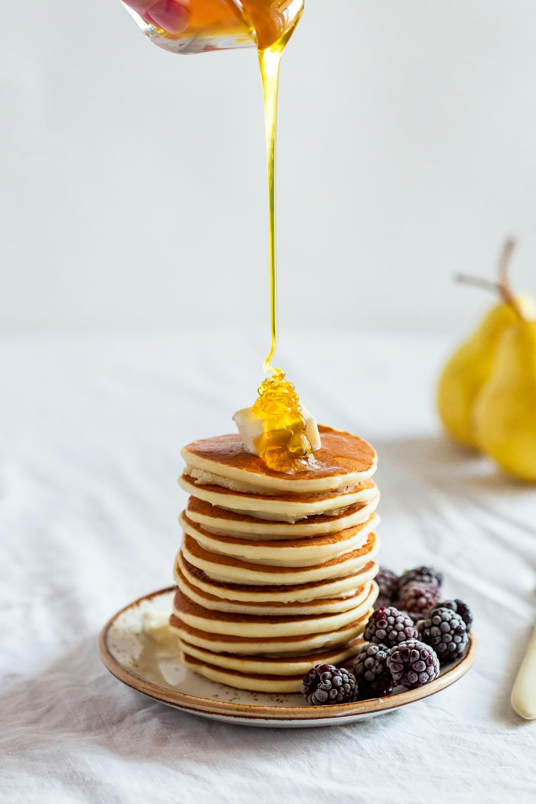

Recipe Details
Prep time: 10 minutes
Cook time: 15 minutes
Difficulty: Easy
Recipe Image
Delicious fluffy pancakes ready to be served!
Image source:
Pexels

Ingredients
- 1 cup all-purpose flour
- 2 tablespoons sugar
- 2 teaspoons baking powder
- 1/2 teaspoon salt
- 1 cup milk
- 1 egg
- 2 tablespoons melted butter
- 1 teaspoon vanilla extract
Instructions
- Mix flour, sugar, baking powder, and salt in a bowl.
- In another bowl, whisk milk, egg, melted butter, and vanilla extract.
- Pour the wet ingredients into the dry ingredients and stir until just combined.
- Heat a non-stick skillet over medium heat and pour 1/4 cup batter for each pancake.
- Cook until bubbles form on the surface, then flip and cook until golden brown.
Tips & Notes
Don’t overmix the batter.
Cook on medium heat.
Add fruits or chocolate chips for extra flavor.
Nutrition Facts (per serving)
- Calories: 227 kcal
- Carbs: 28g
- Protein: 6g
- Fat: 10g
- Saturated Fat: 5g
- Cholesterol: 55mg
- Sodium: 450mg
- Sugar: 6g